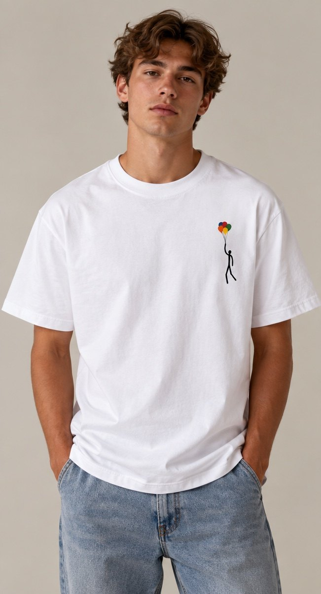

L'histoire
Un pied dans le socle,
le reste déjà dans le ciel.
L'Envol est une sculpture que je façonne depuis des années, en bronze, en plâtre, en différentes couleurs. Mon petit personnage n'a qu'un seul pied ancré dans le socle. Il est à deux doigts de s'envoler.
Les ballons qui le tirent vers le haut, c'est l'enfance. C'est aussi la liberté qu'on trouve dans l'art, celle qui permet de s'élever.
L'Envol raconte une nouvelle histoire, un nouveau départ. Il m'a semblé juste de commencer avec lui ce nouveau chapitre : mon premier pas dans le textile.
Grégoire van der Stappen
